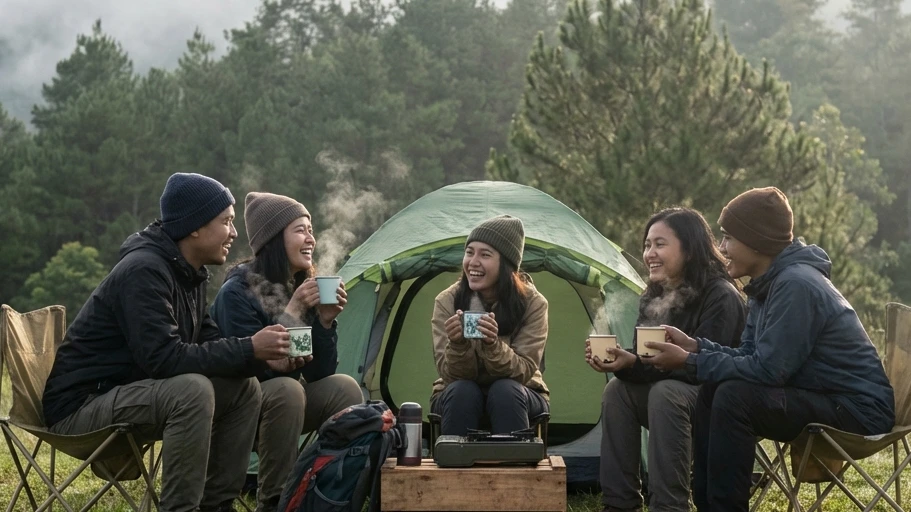

1. Tren Liburan Alam: Antara Otentisitas dan Kenyamanan
Seiring dengan meningkatnya kesadaran masyarakat akan pentingnya menjaga kesehatan mental (mental health), tren pariwisata perlahan namun pasti mulai bergeser. Orang-orang yang lelah dengan rutinitas perkotaan tidak lagi mencari mal besar atau pusat perbelanjaan yang bising; mereka mencari ketenangan batin (healing) di pelukan alam terbuka. Destinasi dataran tinggi seperti Batu Malang menjadi primadona utama berkat udara sejuknya yang bebas polusi dan panorama alamnya yang spektakuler.
Namun, ketika Anda memutuskan untuk menginap di alam bebas, Anda akan dihadapkan pada dua pilihan gaya liburan yang saat ini mendominasi industri pariwisata outdoor: Camping (kemah tradisional) dan Glamping (Glamorous Camping). Meskipun keduanya sama-sama menempatkan Anda di bawah langit terbuka, pengalaman dan tingkat kenyamanan yang disajikan ibarat bumi dan langit. Jika Anda sedang merencanakan liburan, mencari informasi mengenai Apa Perbedaan Camping dan Glamping? Kenali Kelebihan Masing-Masing Sebelum Berangkat adalah langkah wajib agar Anda tidak salah ekspektasi dan berujung pada penderitaan fisik selama liburan berlangsung.
2. Apa Itu Camping Tradisional?
Sebelum kita membedah persamaannya, mari kita pahami secara mendasar apa yang dimaksud dengan camping atau berkemah dalam definisi tradisionalnya.
Definisi dan Esensi Berkemah
Camping tradisional adalah aktivitas kembali ke alam (back to nature) di mana pesertanya mengandalkan keterampilan dasar untuk bertahan hidup secara mandiri. Anda membawa tenda sendiri (biasanya berupa tenda dome portabel), mencari lokasi tanah datar yang ideal, merakit kerangka tenda, hingga memasak makanan menggunakan kompor lapangan mini atau kayu bakar. Esensi utamanya adalah kemandirian, kesederhanaan, dan upaya untuk melepaskan diri sepenuhnya dari kenyamanan peradaban modern.
Kelebihan Camping Tradisional
Kelebihan utama dari camping adalah pengalaman otentik yang ditawarkannya. Anda benar-benar belajar berinteraksi dengan alam, merasakan tekstur tanah, mendengarkan simfoni suara hutan yang asli, dan melatih kemandirian diri. Selain itu, dari segi biaya, camping tradisional jauh lebih hemat secara jangka panjang. Setelah Anda membeli peralatan dasar sekali saja, Anda hanya perlu membayar tiket sewa lahan (ground) yang harganya amat murah setiap kali Anda ingin berlibur.
Kekurangan dan Tantangan Fisik
Kekurangannya terletak pada tuntutan fisik dan logistik yang tinggi. Anda harus membawa ransel (carrier) yang amat berat berisi tenda, tiang, matras, sleeping bag, bahan makanan, hingga peralatan masak. Selain itu, Anda harus bersiap menghadapi ketidaknyamanan tidur beralaskan tanah keras, serta kesulitan mencari fasilitas sanitasi (MCK) yang bersih di tengah alam liar.
BACA JUGA (Opsi Kemah Nyaman):
3. Apa Itu Glamping (Glamorous Camping)?
Beranjak dari berbagai keluhan mengenai sulitnya berkemah secara mandiri, industri pariwisata melahirkan sebuah solusi cemerlang yang kini tengah meledak di pasaran.
Konsep Kemah Gaya Baru
Glamping adalah singkatan dari Glamorous Camping. Secara konsep, glamping memadukan estetika dan eksotisme bermalam di tengah alam liar dengan fasilitas serta standar pelayanan setara hotel berbintang. Tenda yang digunakan biasanya bukan tenda parasut biasa, melainkan tenda safari besar berspesifikasi premium, tenda kanvas raksasa (bell tent), atau struktur membran mewah yang telah didirikan secara permanen oleh pihak pengelola di atas dek kayu yang bersih.
Kelebihan Glamping bagi Wisatawan Pemula
Kelebihan absolut dari glamping adalah tanpa ribet. Anda tidak perlu memanggul beban berat atau berkeringat merakit tenda. Setibanya di lokasi, Anda akan disambut oleh kasur pegas (springbed) yang amat empuk, selimut tebal wangi, aliran listrik yang memadai, dan fasilitas kamar mandi privat yang dilengkapi air hangat (water heater). Glamping memungkinkan Anda yang tidak memiliki skill survival sama sekali—termasuk anak balita dan lansia—untuk bisa menikmati udara malam pegunungan tanpa harus menderita secara fisik.
Kekurangan Glamping
Tentu saja, kemewahan ini datang dengan harga yang sepadan. Kekurangan glamping adalah biayanya yang relatif mahal (seringkali menyamai atau melebihi harga kamar hotel konvensional). Selain itu, bagi kalangan pecinta alam garis keras, glamping sering dianggap menghilangkan "jiwa petualangan" sejati karena semuanya telah disajikan secara instan.

Berkat evolusi pariwisata yang inovatif, tenda-tenda modern (Comfort Camping) kini mampu menjembatani kesenjangan antara camping biasa yang menyiksa dengan glamping yang super mahal. (Dokumentasi: Batu Sunrise Camp)4. Perbedaan Utama Antara Camping dan Glamping
Jika kita harus membedah inti dari Apa Perbedaan Camping dan Glamping? Kenali Kelebihan Masing-Masing Sebelum Berangkat, maka kita bisa melihatnya melalui tiga aspek krusial berikut ini:
Persiapan dan Barang Bawaan (Logistik)
Dalam camping tradisional, Anda bertindak sebagai manajer logistik bagi diri Anda sendiri. Anda wajib memastikan tidak ada satupun alat vital (seperti pasak tenda, matras tidur, senter, dan kompor) yang tertinggal di rumah, karena hal itu bisa berakibat fatal. Sebaliknya, saat Anda memilih glamping, satu-satunya barang bawaan (packing list) yang Anda butuhkan hanyalah koper berisi pakaian pribadi, obat-obatan khusus, dan kamera. Semua alat berat sudah disediakan (ready to use) oleh pengelola lahan.
Fasilitas Tempat Tidur dan Sanitasi MCK
Pada kemah reguler, tidur beralaskan matras spons tipis di atas tanah yang tak rata adalah sebuah kewajaran. Jika ingin buang air, Anda harus meraba jalan dalam kegelapan menuju toilet umum yang kualitasnya seringkali dipertanyakan. Pada ekosistem glamping, tulang punggung Anda diselamatkan oleh kasur King/Queen size yang ergonomis, lengkap dengan bantal kepala berstandar hotel. Urusan sanitasi diselesaikan dengan hadirnya kamar mandi bersih berdinding keramik, kloset duduk flushing, serta pancuran air mandi bersuhu hangat.
Anggaran Biaya (Budget) yang Dibutuhkan
Jika Anda belum memiliki peralatan camping, investasi awalnya memang besar (bisa jutaan rupiah untuk membeli tenda dan perlengkapan lain). Namun setelahnya, biaya operasional camping mandiri amatlah murah. Di sisi lain, glamping tidak mengharuskan Anda membeli aset alat, namun Anda harus membayar biaya sewa malam (rate per night) yang cukup tinggi setiap kali Anda ingin berlibur.
5. Mana yang Lebih Cocok untuk Anda?
Setiap orang memiliki ritme dan kebutuhan liburan yang amat berbeda. Penentuan pilihan akhir sangat bergantung pada komposisi rombongan dan tujuan akhir Anda menepi ke alam.
Rekomendasi untuk Pecinta Tantangan Alam
Jika Anda adalah kawanan anak muda, mahasiswa, atau pekerja berjiwa petualang yang ingin melatih kekompakan tim, menumbuhkan insting kemandirian, dan merayakan kerja keras bersama (seperti memasak di bawah rintik gerimis), maka camping tradisional adalah jalur yang tepat untuk menempa mental Anda.
Rekomendasi untuk Keluarga dan Anak-Anak
Namun, jika Anda adalah seorang ayah atau ibu yang membawa anak-anak yang masih balita, ataupun membawa orang tua yang telah berusia lanjut (lansia), keselamatan dan kenyamanan adalah prioritas absolut yang tak bisa diganggu gugat. Glamping atau paket Comfort Camping (kemah nyaman dengan tenda fasilitas *All-In* yang disiapkan pengelola seperti di Batu Sunrise Camp) adalah opsi paling logis. Anda tidak akan kehabisan energi membangun tenda, dan istri serta anak Anda akan tersenyum bahagia karena mereka terbebas dari siksaan hawa dingin yang menusuk kalbu.
BACA JUGA (Panduan Persiapan):
6. Kesimpulan
Memahami secara tajam wacana Apa Perbedaan Camping dan Glamping? Kenali Kelebihan Masing-Masing Sebelum Berangkat adalah fondasi utama agar ekspektasi liburan (healing) Anda berjalan tanpa cacat. Camping tradisional menawarkan kebanggaan atas kemandirian, otentisitas bertahan hidup, dan efisiensi biaya jangka panjang. Sementara itu, Glamping menawar kemewahan paripurna, kepraktisan logistik (anti-repot), dan perlindungan maksimal dari cuaca ekstrem pegunungan. Apapun jalan yang Anda pilih, dataran tinggi Kota Batu selalu menyediakan ekosistem yang luar biasa menawan untuk menyambut Anda. Bagi Anda yang mendambakan harmoni—ingin berkemah namun malas repot—solusi tengah bernama Comfort Camping (menyewa paket tenda *All-In* dengan fasilitas toilet duduk dan listrik) di pengelola profesional layaknya Batu Sunrise Camp adalah keputusan investasi liburan keluarga yang paling cerdas yang bisa Anda ambil tahun ini.